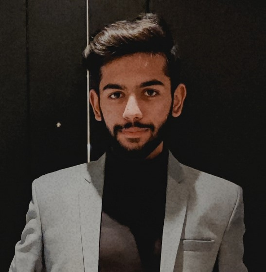

Zain Ali

Summary
I am hardworking and dedicated individual with
practical experience in developing projects
like a Hotel Management System.
Education
FAST NUCES
Bachelor of Science in Computer Science (Sept. 2021 – May 2025)GCU Lahore
Intermediate in Fsc-Pre Engineering (August. 2019 – May 2021)
Relevant Courses
- OOP
- Data Structures
- Database Management
- Operating System
- Computer Architecture
Projects
-
Hotel Management Systeml ⭐⭐⭐⭐
May 2023
- Integrates frontend technologies like HTML, CSS, and JavaScript, along with backend tools.
- Implemented OOP practices such as inheritance to create different account types and databases.
-
November 2022
- Fish Mania Coin Collection Game in Assembly Language 8088 Processor; Animation based game coded in Assembly.
-
1024 Game⭐⭐⭐⭐⭐
January 2022
- Created a console based game in C++ Language.
Skills
Languages:
Python, C, C++, C#, Java, Assembly Language, HTML/CSS, MySQL.
Developer Tools:
Microsoft Visual Studio, VS Code, IntelliJ IDEA, PyCharm, VMware, DosBox, SSMS.
Technologies/Frameworks:
Ubuntu/Linux, SFML, BGI Graphics.
Extracurricular
SOFTEC FAST NU 2022
Media Volunteer (December 2021 – September 2022)
- Worked as a Media Volunteer in Softec which is the biggest IT Event in Pakistan.
- Helped the Media team in spreading information regarding Softec using various social media platforms like Facebook and Instagram.
- Did Media coverage of different competitions during 3 days of Softec.
Other